Chapter 6 Vignettes
6.1 Running TDMore
What’s TDMore?
TDMore is an R package that attemps to provide a global framework for making Therapeutic Drug Monitoring software. It is designed not only for the pharmacometricians but also for the physicians.
Creating your model
There are several ways telling TDMore what your model is. The easiest way is to provide the model in the form of a nxlmir model. The following example shows how a 2-compartment-PK model can be written. For the purpose of this demonstration, the ‘Meropenem’ PK model will be used. As Meropenem is given by injection into a vein, the absorption compartment is omitted.
library(nlmixr)
modelCode <- function(){
ini({
TVV1 <- 24.4;
TVV2 <- 7.01;
TVQ <- 4.97;
TVCL <- 9.87;
ECL ~ 0.194 # This value corresponds to OMEGA_CL (44% SD)
EV1 ~ 0.287 # This value corresponds to OMEGA_V1 (54% SD)
EPS_PROP <- 0.371 # Proportional error (37% SD)
})
model({
CL <- TVCL * exp(ECL)
V1 <- TVV1 * exp(EV1)
V2 <- TVV2
Q <- TVQ
K12 <- Q/V1
K21 <- Q/V2
d/dt(center) = - CL/V1 * center - K12*center + K21 * periph
d/dt(periph) = K12*center - K21 * periph
CONC = center / V1
CONC ~ prop(EPS_PROP) # Proportional error linked to the PK model
})
}Once the model is created, a TDMore object can be instantiated as follows:
library(tdmore)
nlmixrUI <- nlmixrUI(modelCode)
tdmore <- tdmore(nlmixrUI)The TDMore object is now ready for use.
Predicting new data
TDMore can be used to run simulations, based on the model defined in the previous step. For doing so, the regimen first needs to be specified. In the case of Meropenem, an 30-min injection is given into the central compartment every 8 hour. This can be written as follows:
regimen <- data.frame(
TIME=c(0, 8, 16), # Every 8 hour and for 1 day, an injection is given
AMT=c(1000, 1000, 1000), # 1g is administered
RATE=c(1000, 1000, 1000)/0.5 # 30-minute infusion (rate=dose/infusion time)
)Let’s now simulate the population PK model for 1 day. This can be done using the TDMore predict() function. A dataframe with all the times to predict (and respective NA concentration) is given to the ‘newdata’ argument. Field ‘se’ is set to true, it tells TDMore we are interested to simulate the model with residual variability.
data <- predict(
object = tdmore,
newdata = data.frame(TIME = seq(0, 24, by = 0.5), CONC = NA),
regimen = regimen,
se = TRUE
)
library(ggplot2)
ggplot(data, aes(x=TIME, y=CONC)) +
geom_ribbon(aes(fill="Population", ymin=CONC.lower, ymax=CONC.upper), fill="steelblue2", alpha=0.15) +
geom_line(aes(color="Population"), data=data) +
scale_color_manual(values=c("steelblue2")) +
scale_y_log10()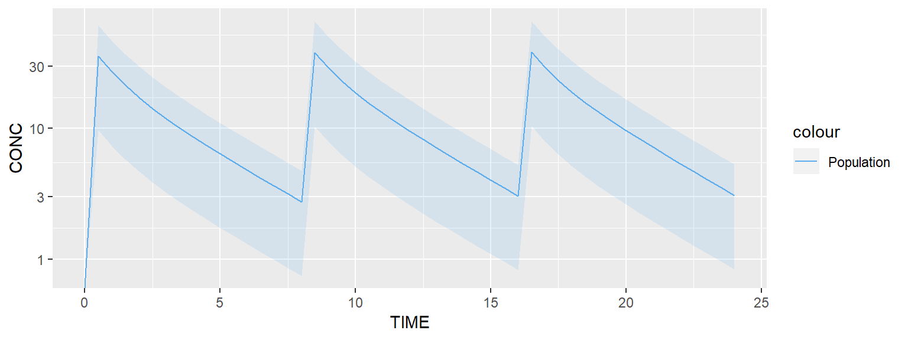
The plot above shows the median of the population (typical profile) and its 95% confidence interval. The range of the confidence interval can be changed using the argument ‘level’.
Estimating individual parameters
This section will show you how the individual parameters can be estimated, based on some observed data. Let’s first estimate the parameters of a typical individual. This is achieved by calling the estimate() function.
pred <- estimate(tdmore, regimen = regimen)
coef(pred)## ECL EV1
## 0 0Both eta’s ECL and EV1 have been estimated to 0. This is not surprising, as zero eta’s best describe the population average. We can also look at the uncertainty on these estimates.
vcov(pred)## ECL EV1
## ECL 0.194 0.000
## EV1 0.000 0.287This uncertainty is equal to the population inter-individual variability (OMEGA matrix). Now, let’s assume blood samples have been collected for a subject X at different times. For example, blood samples were collected at times 9h and 16h on the first day. This can be translated in TDMore as follows (note that the concentrations are purely fictive):
observed <- data.frame(TIME=c(9, 15), CONC=c(30, 2))We can ask TDMore to re-estimate the parameters for this specific individual:
ipred <- estimate(tdmore, observed = observed, regimen = regimen)
coef(ipred)## ECL EV1
## 0.2597598 -0.1320256Eta’s obtained by calling ‘coef’ on pred maximise altogether the likelihood for this specific subject. The variance-covariance matrix shows the uncertainty of the individual estimates, and their correlation.
vcov(ipred)## ECL EV1
## ECL 0.03154084 0.04680264
## EV1 0.04680264 0.12759969Predictions for the population (pred) and this specific subject (ipred) can be compared using the following snippet:
data <- predict(ipred, newdata=data.frame(TIME=seq(0, 24, 0.1), CONC=NA), se=TRUE)
ggplot(data, aes(x=TIME)) +
geom_line(aes(color="Individual", y=CONC.median)) +
geom_ribbon(aes(fill="Individual", ymin=CONC.lower, ymax=CONC.upper), fill="tomato1", alpha=0.10) +
geom_line(aes(color="Population", y=CONC), data=predict(pred, newdata=seq(0, 24, 0.1))) +
geom_point(aes(y=CONC), data=observed) +
scale_color_manual(values=c("tomato1", "steelblue2")) +
scale_y_log10()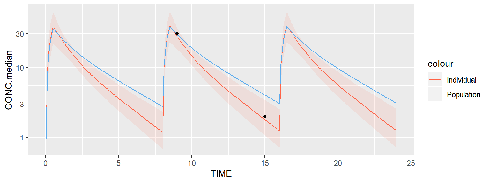
Ipred and pred are shown respectively in red and blue. A 95% confidence interval has been added around the ipred prediction. Note that the default TDMore plotting function can also be used to obtain the exact same plot in a single line of code:
plot(ipred, newdata=data.frame(TIME=seq(0.1, 24, by=0.1), CONC=NA)) + scale_y_log10()Finding the right dose to give
A very interesting feature in TDMore is the possibility to ask the framework the next dose to be given knowing all the previous observations that were collected and some known end-points. For example, assume we still collected the same two observations on the first day, we would like to find the best first dose to be given on the second day. We would like to reach the trough concentration of 3.10 mg/L as much as possible. This can be expressed, as follows:
newRegimen <- data.frame(
TIME=c(0, 8, 16, 24), # A fourth dose on the second day is added
AMT=c(1000, 1000, 1000, NA), # Adding an unknown dose on the second day
RATE=c(1000, 1000, 1000, 1000)/0.5 # 30-minute infusion (rate=dose/infusion time)
)
recommendation <- findDose(
ipred,
regimen = newRegimen,
interval = c(100, 5000),
target = data.frame(TIME = 32, CONC = 8)
)
summary(recommendation)## $dose
## [1] 4540.072
##
## $regimen
## TIME AMT RATE
## 1 0 1000.000 2000
## 2 8 1000.000 2000
## 3 16 1000.000 2000
## 4 24 4540.072 2000The result of the findDose() routine is shown above. It tells us that XXX mg (approximately) is the recommended starting dose on the second day. The following code helps up verify this visually.
# Recommended regimen for individual can be directly accessed from the recommendation object
ipredRecommendedRegimen <- recommendation$regimen
# Population regimen can be updated using the 'updateRegimen' method, a 4th dose of 1000 is used
predUpdatedRegimen <- updateRegimen(regimen = newRegimen, newDose = 4500)
print(predUpdatedRegimen) # Check pred regimen## TIME AMT RATE
## 1 0 1000 2000
## 2 8 1000 2000
## 3 16 1000 2000
## 4 24 4500 2000ipred <- estimate(tdmore, observed = observed, regimen = ipredRecommendedRegimen)
pred <- estimate(tdmore, regimen = predUpdatedRegimen)plot(ipred, newdata=seq(0, 32, by=0.1)) + geom_hline(yintercept=8) + scale_y_log10()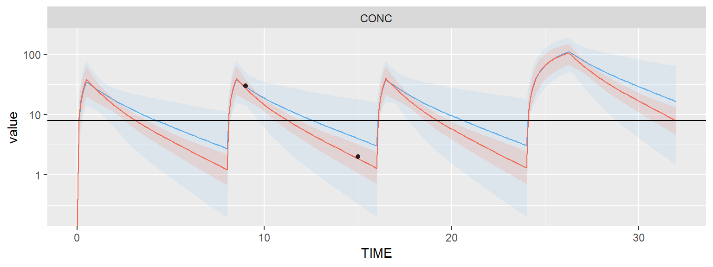
The plot above demonstrates that the individual is reaching the trough concentration quite well after the first administration on the second day.
6.2 Multiple endpoints
Writing and testing the PK model
In this vignette, we will learn how TDMore can deal with multiple endpoints. The PK/PD models chosen to illustrate this section are based on the following paper: “Population PK/PD modeling of Sunitinib by dosing schedule in patients with advanced renal cell carcinoma or gastrointestinal stromal tumor.”.
Let’s start writing the Sunitinib PK model.
library(nlmixr)
modelCode <- function(){
ini({
TVCL <- 34.1
TVVc <- 2700
TVKa <- 0.126
TVVp <- 774
TVQ <- 0.688
ECL ~ 0.060516 # 24.6%
EVc ~ 0.052900 # 23.0%
EKa ~ 2.755600 # 166%
EPS_Prop <- 0.417
})
model({
CL <- TVCL * exp(ECL)
Vc <- TVVc * exp(EVc)
Vp <- TVVp
Q <- TVQ
K12 <- Q/Vc
K21 <- Q/Vp
Ke <- CL/Vc
Ka <- TVKa*exp(EKa)
d/dt(depot) = -Ka*depot
d/dt(center) = Ka*depot - Ke*center - K12*center + K21*periph
d/dt(periph) = K12*center - K21*periph
CONC = center/Vc
CONC ~ prop(EPS_Prop)
})
}The TDMore object is instantiated as follows:
library(tdmore)
nlmixrModel <- nlmixrUI(modelCode)
m1 <- tdmore(nlmixrModel)A basic regimen can be created to test that the model is running properly. The standard regimen of Sunitinib is 50mg daily for 4 weeks.
regimen <- data.frame(
TIME=0, # First dose time: t=0h
AMT=50, # Dose amount: 50 mg
II=24, # Dose interval: 24h
ADDL=4*7-1 # Additional doses: 4 weeks
)
times <- seq(0, 6*7*24) # Observation timesThis regimen can be plotted using the default TDMore plotting function. It shows the typical value of the population and the between-subject variability (95% confidence interval).
plot(m1, regimen, newdata=times)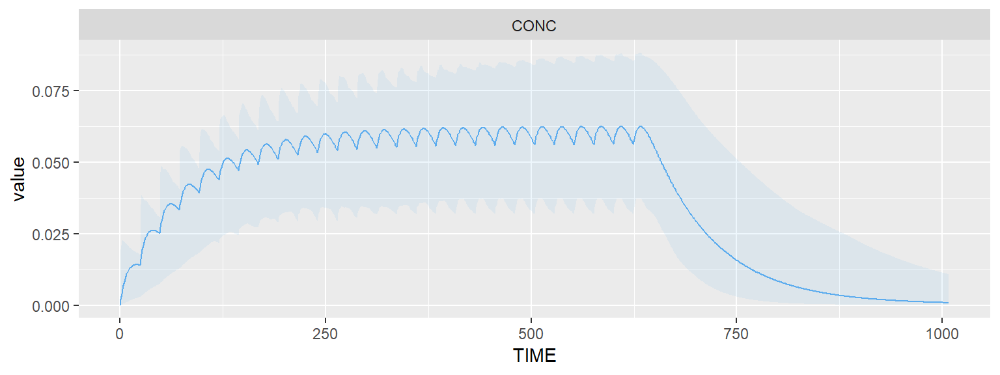
Adding a PD model
Suppose we received a full blood workup: Sunitinib concentration, Alanine aminotransferase (ALT), Aspartate aminotransferase (AST), Absolute neutrophil count (ANC), Platelet count (PC) and Lymphocyte count (LC). We also measured the patient’s diastolic blood pressure (DBP).
We can create a single model to predict all of these aspects. In the example below, we will focus on ALT and AST. Please note the mandatory ‘|’ nlmixr syntax used to describe the residual variability of different endpoints.
modelCode <- function(){
ini({
# PK model sunitinib
TVCL <- 34.1
TVVc <- 2700
TVKa <- 0.126
TVVp <- 774
TVQ <- 0.688
ECL ~ 0.060516 # 24.6%
EVc ~ 0.052900 # 23.0%
EKa ~ 2.755600 # 166%
EPS_Prop <- 0.417 # Proportional error 1 (related to CONC)
# PD model ALT
TVBASE_AST <- 21.5
TVKout_AST <- 0.0142
TVKpd_AST <- 0.00572
EPS_Prop_AST = 0.257 #25.7%
# PD model AST
TVBASE_ALT <- 21.2
TVKout_ALT <- 0.00916
TVKpd_ALT <- 0.00401
EPS_Prop_ALT = 0.373 #37.3%
# We assume 0.5 correlations in IIV, even though they are not reported in the original paper
EBASE_AST + EBASE_ALT ~ c(0.101124,
0.05028021, 0.164025) # 31.8% #40.5%
EKout_AST + EKout_ALT ~ c(1.440000,
0.1897367, 1.638400)#120% #128%
EKpd_AST + EKpd_ALT ~ c(0.114244,
0.05344249, 0.324900) #33.8% #57.0%
})
model({
# PK parameters
CL <- TVCL * exp(ECL)
Vc <- TVVc * exp(EVc)
Vp <- TVVp
Q <- TVQ
K12 <- Q/Vc
K21 <- Q/Vp
Ke <- CL/Vc
Ka <- TVKa*exp(EKa)
# AST parameters
BASE_AST <- TVBASE_AST * exp(EBASE_AST)
Kout_AST <- TVKout_AST * exp(EKout_AST)
Kpd_AST <- TVKpd_AST * exp(EKpd_AST) #mL/ng
Kin_AST <- Kout_AST * BASE_AST
# ALT parameters
BASE_ALT <- TVBASE_ALT * exp(EBASE_ALT)
Kout_ALT <- TVKout_ALT * exp(EKout_ALT)
Kpd_ALT <- TVKpd_ALT * exp(EKpd_ALT) #mL/ng
Kin_ALT <- Kout_ALT * BASE_ALT
# PK model
d/dt(depot) = -Ka*depot
d/dt(center) = Ka*depot - Ke*center - K12*center + K21*periph
d/dt(periph) = K12*center - K21*periph
CONC = center/Vc * 1000 #ng/mL
# AST model
AST(0) = BASE_AST
d/dt(AST) = Kin_AST - Kout_AST*AST*(1-Kpd_AST*CONC)
# ALT model
ALT(0) = BASE_ALT
d/dt(ALT) = Kin_ALT - Kout_ALT*ALT*(1-Kpd_ALT*CONC)
# Residual error models
CONC ~ prop(EPS_Prop) | center # Define error model 1
AST ~ prop(EPS_Prop_AST) | AST # error model 2
ALT ~ prop(EPS_Prop_ALT) | ALT # error model 3
})
}
nlmixrModel <- nlmixrUI(modelCode)
m2 <- tdmore(nlmixrModel, maxsteps=1E3*500)Let’s now have a look at the evolution of these safety signals over time. To have a good overview, we will observe ALT/AST for 4 weeks treatment. The default plot shows once again the typical value and the between-subject variability (95% CI).
regimen <- data.frame(
TIME=0,
AMT=50,
II=24,
ADDL=4*7
)
times <- seq(0, 6*7*24, by=1)
plot(m2, regimen, newdata=data.frame(TIME=times, CONC=NA))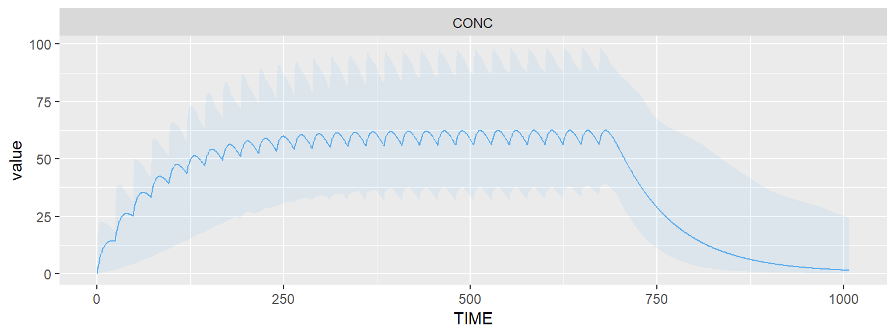
plot(m2, regimen, newdata=data.frame(TIME=times, ALT=NA))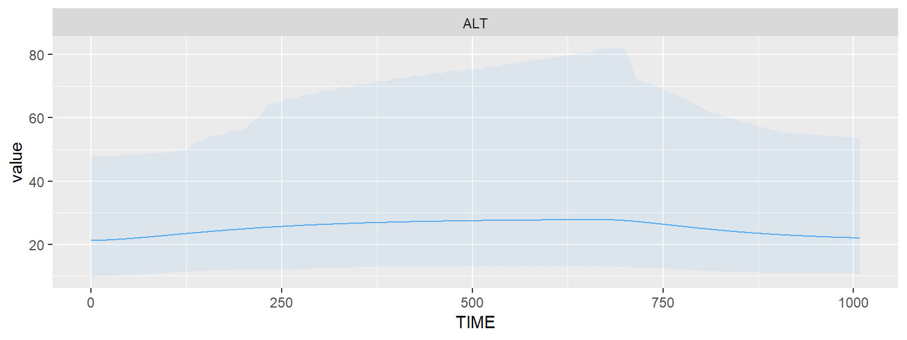
plot(m2, regimen, newdata=data.frame(TIME=times, AST=NA))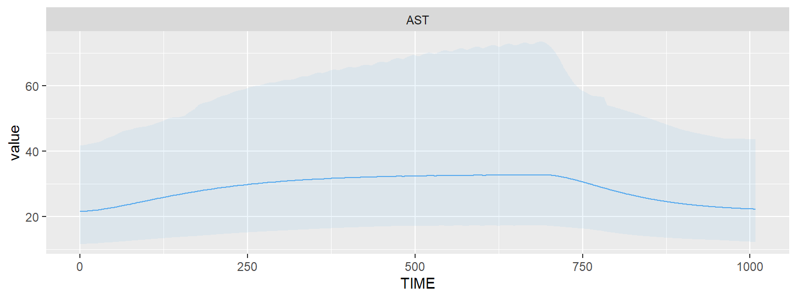
Estimating individual parameters
We get the values for ALT/AST for a specific individual. These are quite high!
observed <- data.frame(
TIME=c(0, 2,3,4)*7*24,
CONC=NA,
ALT=c(21, 40, 42, 43),
AST=c(21, 45, 47, 49))
ipred <- estimate(m2, observed = observed, regimen = regimen)
plot(ipred, newdata=data.frame(TIME=times, CONC=NA))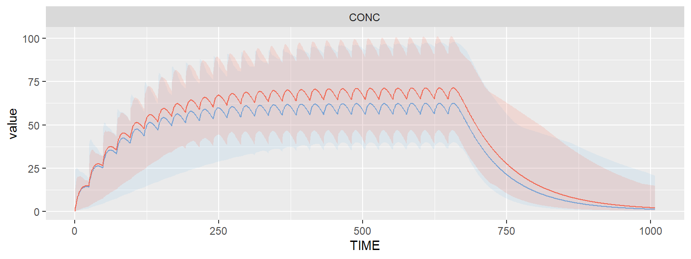
plot(ipred, newdata=data.frame(TIME=times, ALT=NA))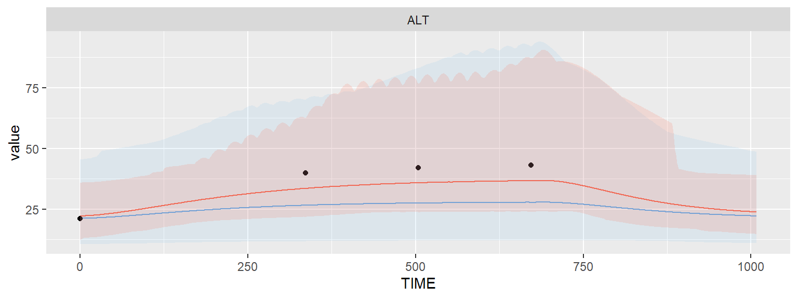
plot(ipred, newdata=data.frame(TIME=times, AST=NA))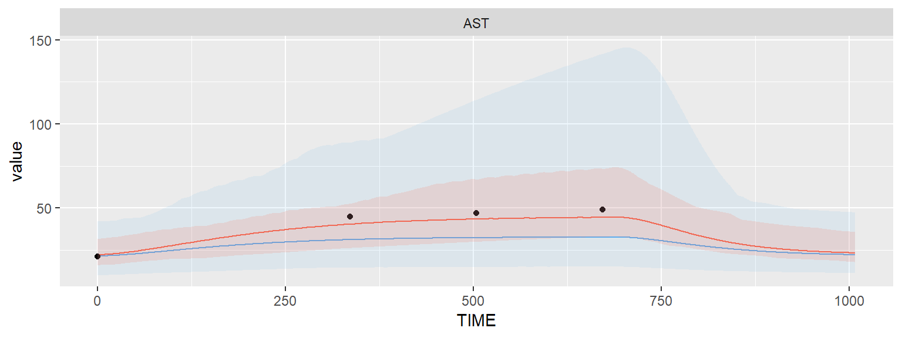
Based on only ALT/AST values, we managed to define the PK inter-individual variability a little better. Indeed, these high ALT/AST values can be best explained through a combination of high sensitivity (EKpd), and a lower clearance (ECL) of the drug.
coef(ipred)## ECL EVc EKa EBASE_AST EBASE_ALT EKout_AST
## -0.13927141 -0.01279161 0.02257760 0.03233717 0.04497159 0.22456560
## EKout_ALT EKpd_AST EKpd_ALT
## 0.22778905 0.24279322 0.37291944coef(ipred) / sqrt(diag(m2$omega))## ECL EVc EKa EBASE_AST EBASE_ALT EKout_AST
## -0.56614395 -0.05561569 0.01360096 0.10168920 0.11104095 0.18713800
## EKout_ALT EKpd_AST EKpd_ALT
## 0.17796020 0.71832312 0.654244626.3 Example: Detecting non-adherence
=======5.3 Example: Detecting non-adherence
About this example
Non-compliance is an important issue endangering the effectiveness of treatments. In COPD, it is estimated that there is a non-compliance of more than 98% for inhaled treatments.
In this example, we use TDMore to compare the systemic concentrations of inhaled fluticasone propionate with the population predictions. We show that TDMore can be used to detect severe non-adherence, and to propose corrective action.
The model
Model taken from literature: Soulele, K., et al. “Population pharmacokinetics of fluticasone propionate/salmeterol using two different dry powder inhalers.” European Journal of Pharmaceutical Sciences 80 (2015): 33-42.
library(nlmixr)
modelCode <- function(){
ini({
TVKa <- 3.87
TVCL <- 659 #L/h
TVV1 <- 56900 #L
TVV2 <- 5550 #L
TVQ <- 259 #L/h
EKa ~ 0.04507129 #0.2123**2
ECL ~ 0.1535856 #0.3919**2
EV1 ~ 0.09223369 #0.3037**2
EV2 ~ 0.208301 #0.4564**2
EQ ~ 0.1015697# 0.3187**2
EPS_ADD <- 1.91 #
EPS_PROP <- 0.117
})
model({
Ka <- TVKa * exp(EKa)
CL <- TVCL * exp(ECL)
V1 <- TVV1 * exp(EV1)
V2 <- TVV2 * exp(EV2)
Q <- TVQ * exp(EQ)
K12 <- Q/V1
K21 <- Q/V2
d/dt(center) = - CL/V1 * center - K12*center + K21 * periph
d/dt(periph) = K12*center - K21 * periph
CONC = center / V1 * 1000
CONC ~ prop(EPS_PROP) + add(EPS_ADD)
})
}
nlmixrModel <- nlmixrUI(modelCode)
library(tdmore)
m1 <- tdmore(nlmixrModel)We now define the treatment regimen
regimen <- data.frame(
TIME=seq(0, by=24, length.out=30),
AMT=500 # 500ug standard dose
)
adhering <- predict(m1, regimen=regimen, newdata=seq(0, 30*24))
actual <- data.frame(
TIME=seq(0, by=24, length.out=30),
AMT=500*sample(c(0,1), 30, replace=TRUE) # probability of 50% to not take the dose
)
nonAdhering <- predict(m1, regimen=actual, newdata=seq(0, 30*24))
library(ggplot2)
pred <- estimate(m1, regimen=regimen)
ggplot(mapping=aes(x=TIME, y=CONC)) +
geom_line(aes(color="Adhering"), data=adhering) +
geom_line(aes(color="Non-adhering"), data=nonAdhering)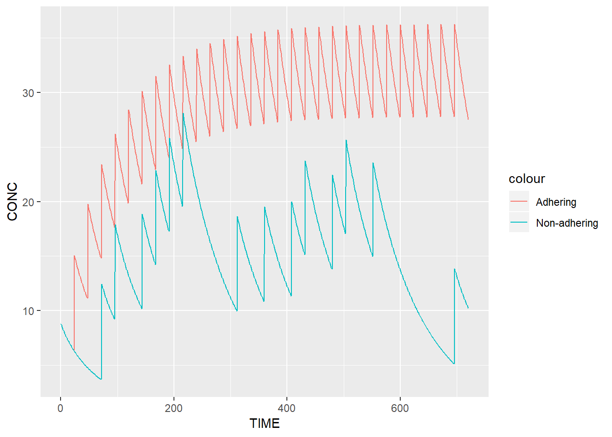
Is the patient taking his/her medication?
We can now take a serum sample and evaluate if there is non-adherence.
# Take a blood sample
observed <- predict(m1, regimen=actual, newdata=data.frame(TIME=30*24+c(-16, 0), CONC=NA))
observed## TIME CONC
## 1 704 12.42485
## 2 720 10.20530# We estimate individual parameters
# as if the patient took his medication
# properly
ipred <- estimate(m1, observed, regimen)
coef(ipred)## EKa ECL EV1 EV2 EQ
## 0.000000000 0.828384249 0.035455547 -0.000201276 0.001489463ggplot(mapping=aes(x=TIME, y=CONC)) +
geom_line(aes(color="Reality"), data=nonAdhering) +
geom_point(data=observed) +
geom_line(aes(color="Population"), data=adhering) +
# geom_ribbon(aes(fill="Population", ymin=CONC.lower, ymax=CONC.upper),
# data=predict(m1, regimen=regimen, newdata=data.frame(TIME=seq(0, 30*24), CONC=NA), se.fit=TRUE), alpha=0.1) +
geom_line(aes(color="Prediction"),
data=predict(ipred, regimen=regimen, newdata=data.frame(TIME=seq(0, 30*24), CONC=NA)))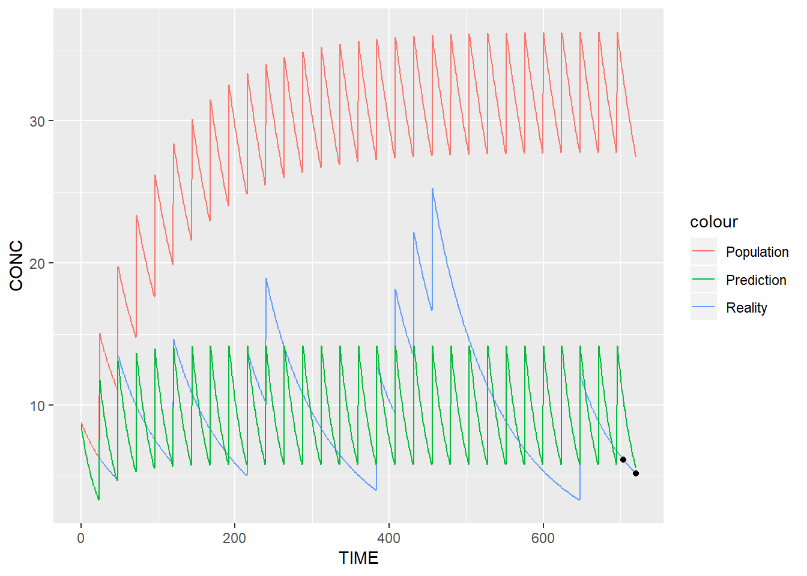
standardDeviations <- coef(ipred) / sqrt(diag(m1$omega))
standardDeviations## EKa ECL EV1 EV2 EQ
## 0.0000000000 2.1137644184 0.1167452994 -0.0004410079 0.0046735564i <- which(pnorm(abs(standardDeviations)) > 0.975)
if(length(i) > 0) {
cat("This patient has unlikely (outside 95% CI) parameter estimates for ", names(i),". There may be a treatment adherence issue.")
}## This patient has unlikely (outside 95% CI) parameter estimates for ECL . There may be a treatment adherence issue.